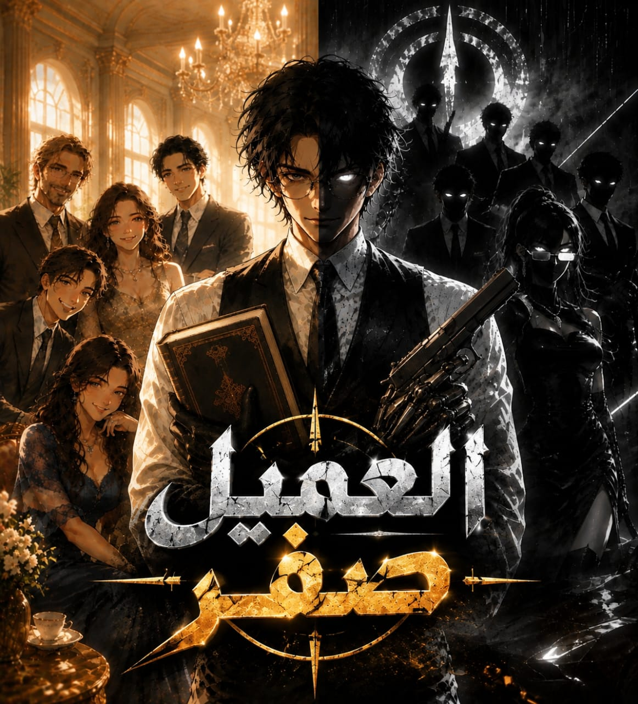

هلال
رجل أعمال شاب يقود شركة Horizon المتخصصة في الذكاء الاصطناعي والروبوتات والأنظمة الذكية، قريب من عائلته ويبحث عن مساحة لحياة طبيعية.

رجل أعمال في وضح النهار… وعميل لا يعرف أحد اسمه الحقيقي في الظلام.
هلال يعيش حياتين في وقت واحد: يدير Horizon، بينما ينفذ مهمات خاصة لمنظمة مصرية سرية تحت اسم العميل صفر. ومع ظهور اسم إبراهيم عادل، تتحول المهمة إلى قضية تتقاطع فيها العائلة، التكنولوجيا، المنظمات الدولية، والعينة الغامضة.
Double Life
هلال لا يترك حياته القديمة تمامًا؛ هو يتنقل بين العائلة، الشركة، والمهمات، وكل انتقال يكشف جانبًا مختلفًا منه.
رجل أعمال شاب يقود شركة Horizon المتخصصة في الذكاء الاصطناعي والروبوتات والأنظمة الذكية، قريب من عائلته ويبحث عن مساحة لحياة طبيعية.
عميل ميداني يجمع بين القتال، اللغات، التقنية، والتحليل، ويتعامل مع المهام تحت ضغط مستمر دون أن يفقد علاقته بالناس من حوله.
Personnel Records
كل شخصية مرتبطة بجانب من الصراع بين الحياة الطبيعية وعالم العملاء.
Investigation Board
اسم طفل عمره 11 عامًا يقود التحقيق إلى سلسلة جرائم، منظمة بريطانية، عينة غامضة، وصراع يتجاوز حدود مصر.
تبدأ القضية عندما تظهر جرائم ارتكبت باسم إبراهيم عادل، ثم يتضح أن الاسم يعود إلى طفل صغير تم اختطافه مع عائلته. إنقاذه يكشف الفارق بين هلال المحترف وطارق الأب الذي اختار أن يستعيد الطفل بالكلمة بدل القوة.
Mission Logs
الفصول تُسحب مباشرة من Firestore وتُعرض كملفات مهمة بدل قائمة تقليدية.